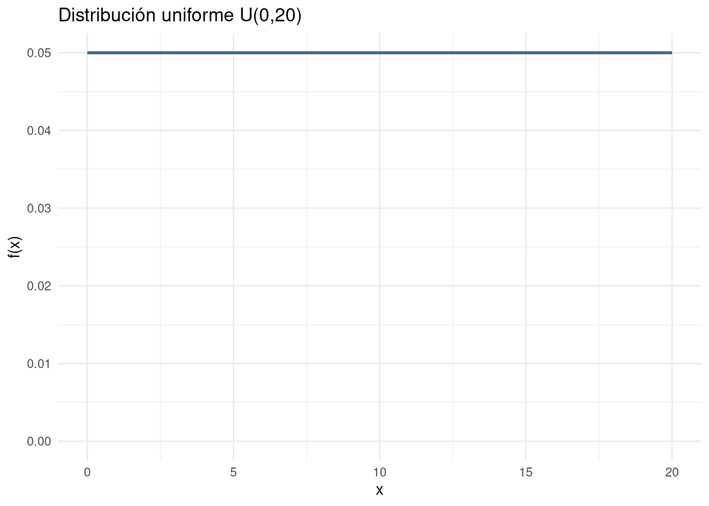
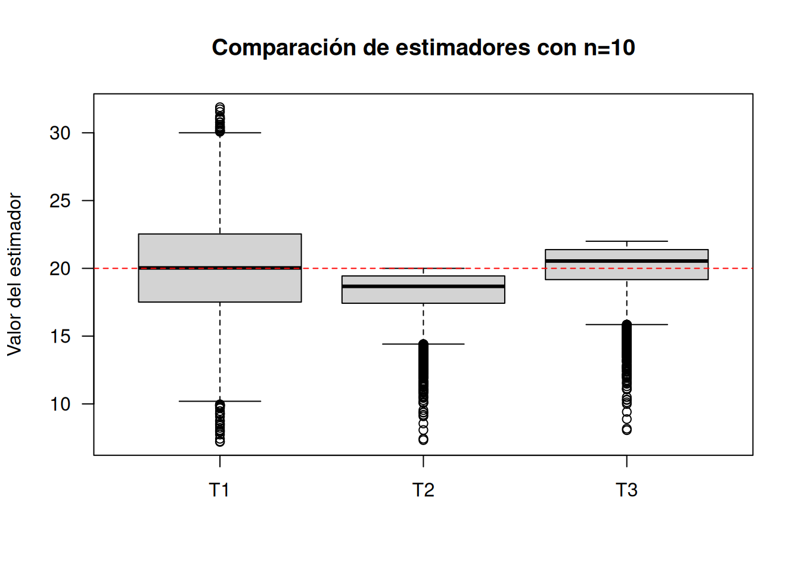
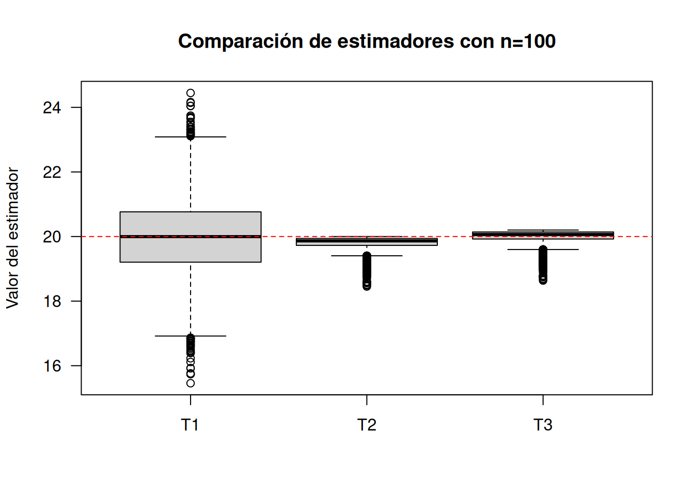
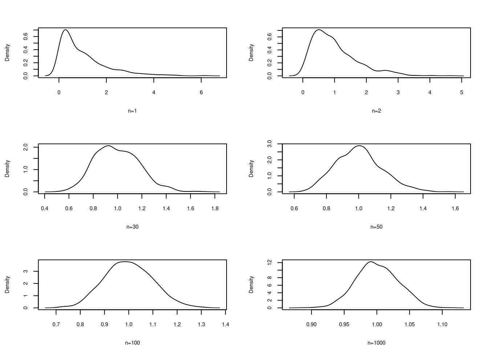
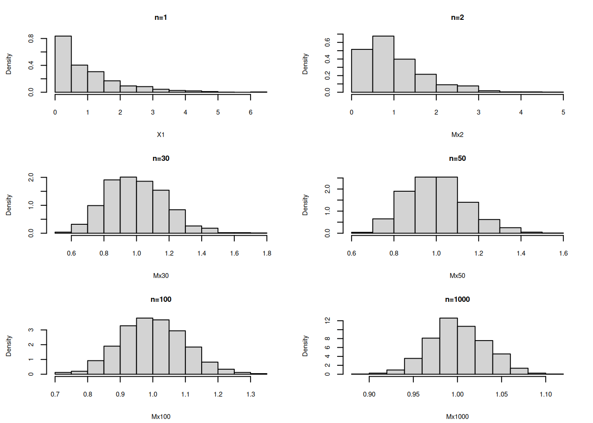
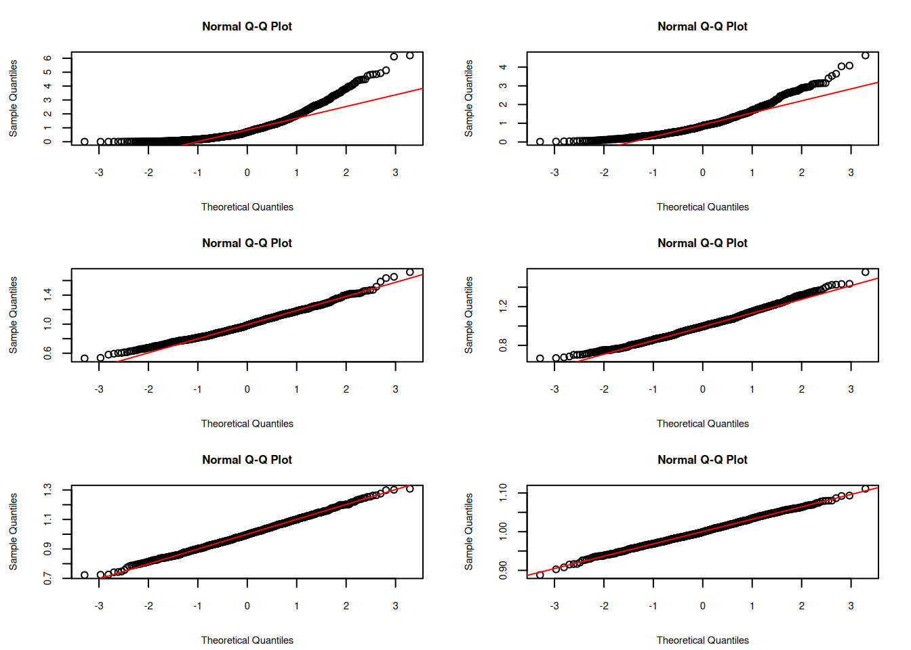
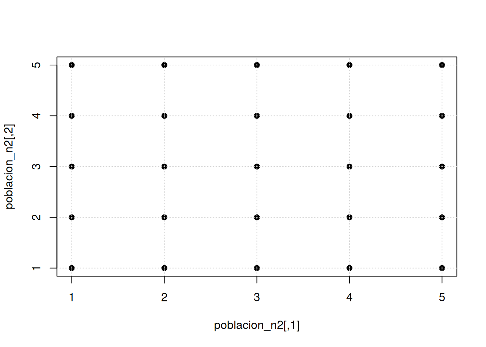
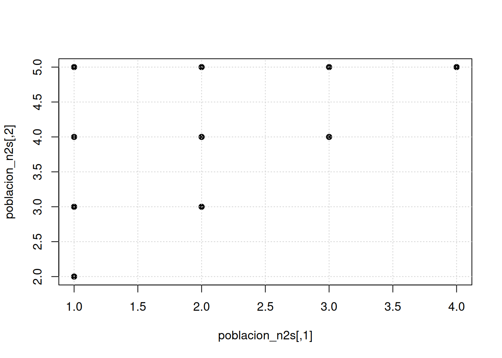

Para una variable con distribución uniforme \(unif(a=0, b=20)\) se desea determinar las propiedades de los siguientes estimadores del parámetro \(b\)
\(\widehat{\theta_{1}} = 2 \bar{x}\)
\(\widehat{\theta_{2}} = \max\{x\}\)
\(\widehat{\theta_{3}} = \dfrac{(n+1)}{n} \max\{x\}\)
# uniforme
library(ggplot2)
x= c(0,20)
fx=c(1/20, 1/20)
dat=data.frame(x,fx)
ggplot(data=dat,aes(x=x, y=fx))+
scale_y_continuous(limits=c(0,.05))+
geom_line(linewidth = 1, colour = '#476885') +
labs(x = 'x', y = 'f(x)', title = 'Distribución uniforme U(0,20)') +
theme_minimal()
Para ello se realiza una simulación, para posteriormente evaluar los estimadores propuestos y determinar sus propiedades.
library(ggplot2)
n=10
B=10000 # número de réplicas de Monte Carlo
Y=matrix(runif(B*n, min=0, max=20), nrow=B, ncol=n) # B muestras de tamaño n
Mx=apply(Y,1,mean)
Max=apply(Y,1,max)
T1=2*Mx
T2=Max
T3=((n+1)/n)*T2
T123=data.frame(T1,T2,T3)
boxplot(T123, las=1, main="Comparación de estimadores con n=10",
ylab="Valor del estimador")
abline(h=20, col="red", lty=2)
res10 <- data.frame(
Estimador = c("T1 = 2 X̄", "T2 = X(n)", "T3 = (n+1)X(n)/n"),
Media_simulada = colMeans(T123),
Sesgo_simulado = colMeans(T123) - 20,
Varianza_simulada = apply(T123, 2, var),
ECM_simulado = colMeans((T123 - 20)^2)
)
knitr::kable(res10, digits=4, align=c("l","r","r","r","r"),
caption="Desempeño de los estimadores para n = 10")| Estimador | Media_simulada | Sesgo_simulado | Varianza_simulada | ECM_simulado | |
|---|---|---|---|---|---|
| T1 | T1 = 2 X̄ | 20.02 | 0.0196 | 13.214 | 13.213 |
| T2 | T2 = X(n) | 18.20 | -1.8048 | 2.714 | 5.971 |
| T3 | T3 = (n+1)X(n)/n | 20.01 | 0.0147 | 3.284 | 3.284 |
Para un tamaño de muestra \(n=10\), \(T_1=2\bar{X}\) y \(T_3=\frac{n+1}{n}X_{(n)}\) son estimadores insesgados de \(b\). En cambio, \(T_2=X_{(n)}\) presenta sesgo negativo, pues \(E[T_2]=\frac{n}{n+1}b\). Entre los estimadores insesgados considerados, \(T_3\) presenta menor varianza que \(T_1\), por lo que resulta más eficiente dentro de esta comparación.
n=100
B=10000 # mismo número de réplicas para facilitar la comparación
Y=matrix(runif(B*n, min=0, max=20), nrow=B, ncol=n) # B muestras de tamaño n
Mx=apply(Y,1,mean)
Max=apply(Y,1,max)
T1=2*Mx
T2=Max
T3=((n+1)/n)*T2
T123=data.frame(T1,T2,T3)
boxplot(T123, las=1, main="Comparación de estimadores con n=100",
ylab="Valor del estimador")
abline(h=20, col="red", lty=2)
res100 <- data.frame(
Estimador = c("T1 = 2 X̄", "T2 = X(n)", "T3 = (n+1)X(n)/n"),
Media_simulada = colMeans(T123),
Sesgo_simulado = colMeans(T123) - 20,
Varianza_simulada = apply(T123, 2, var),
ECM_simulado = colMeans((T123 - 20)^2)
)
knitr::kable(res100, digits=4, align=c("l","r","r","r","r"),
caption="Desempeño de los estimadores para n = 100")| Estimador | Media_simulada | Sesgo_simulado | Varianza_simulada | ECM_simulado | |
|---|---|---|---|---|---|
| T1 | T1 = 2 X̄ | 19.99 | -0.0143 | 1.3396 | 1.3397 |
| T2 | T2 = X(n) | 19.80 | -0.1971 | 0.0380 | 0.0769 |
| T3 | T3 = (n+1)X(n)/n | 20.00 | 0.0009 | 0.0388 | 0.0388 |
Los resultados muestran nuevamente que \(T_3\) es el estimador más preciso entre los tres considerados. El estimador \(T_2\) continúa siendo sesgado, pero su sesgo disminuye cuando aumenta \(n\); por ello, su valor esperado se aproxima a \(b=20\). Esta propiedad corresponde a la consistencia del estimador, no a la insesgadez.
Verificación del Teorema Central del Límite para una población exponencial con \(\lambda=1\)
Con este fin se siguen los siguientes pasos:
par(cex=0.5, cex.axis=.5, cex.lab=.5, cex.main=.5, cex.sub=.5, mfrow=c(3,2), mai = c(.5, .5, .5, .5))
# Teorema Central del Límite-----------------------------
# Paso 1
n=1000 # numero de columnas (tamaño máximo de muestra)
m=1000*n
# Caso --------------------------------------------------
# distribución exponencial-------------------------------
X=matrix(rexp(m,1),ncol=n)
# Paso 2
# generación de muestras-------------
X1=X[ ,1] # n=1
X2=X[ ,1:2] # n=2
X20=X[ ,1:20] # n=20
X30=X[ ,1:30] # n=30
X50=X[ ,1:50] # n=50
X100=X[ ,1:100] # n=100
X1000=X[ ,1:1000] # n=1000
# Paso 3
# generacion de medias---------------
Mx2=apply(X2,1,mean) # medias de muestras de tamaño n=2
Mx20=apply(X20,1,mean) # medias de muestras de tamaño n=20
Mx30=apply(X30,1,mean) # medias de muestras de tamaño n=30
Mx50=apply(X50,1,mean) # medias de muestras de tamaño n=50
Mx100=apply(X100,1,mean) # medias de muestras de tamaño n=100
Mx1000=apply(X1000,1,mean) # medias de muestras de tamaño n=1000
# Paso 4
# generación de densidad empírica --
d=density(X1)
d2=density(Mx2)
#d20=density(Mx20)
d30=density(Mx30)
d50=density(Mx50)
d100=density(Mx100)
d1000=density(Mx1000)
# Gráficos de densidad -------------------------------
# configuración de las gráficas
par(cex=0.7, cex.axis=.7, cex.lab=.7, cex.main=.8, cex.sub=.7, mfrow=c(3,2), mai=c(.55,.55,.4,.25))
# histogramas de comparacion-------------------------
plot(d, main=" ", xlab = "n=1")
plot(d2,main=" ", xlab = "n=2")
#plot(d20, main="", xlab = "n=20")
plot(d30, main=" ", xlab = "n=30")
plot(d50, main=" ", xlab = "n=50")
plot(d100, main=" ", xlab = "n=100")
plot(d1000,main=" ", xlab="n=1000")
# histogramas de comparacion--------------------------
hist(X1, main = "n=1", freq=FALSE)
hist(Mx2, main ="n=2", freq=FALSE)
# hist(Mx20, main = "n=20",freq=FALSE)
hist(Mx30, main = "n=30",freq=FALSE)
hist(Mx50, main = "n=50",freq=FALSE)
hist(Mx100, main = "n=100", freq=FALSE)
hist(Mx1000, main = "n=1000", freq = FALSE) 
# histogramas de comparacion--------------------------
qqnorm(X1) ; qqline(X1, col="red")
qqnorm(Mx2) ; qqline(Mx2, col="red")
# qqnorm(Mx20) ; qqline(Mx20, col="red")
qqnorm(Mx30) ; qqline(Mx30, col="red")
qqnorm(Mx50) ; qqline(Mx50, col="red")
qqnorm(Mx100) ; qqline(Mx100, col="red")
qqnorm(Mx1000) ; qqline(Mx1000, col="red")
Se puede observar la convergencia de la distribución de la media muestral a una distribución normal al aumentarse el tamaño de la muestra
A continuación se presentan las principales características de la media muestral \(\bar{x}\) y de la proporción muestral \(\widehat{p}\). En cada uno de los casos vamos a suponer el conocimiento de una población pequeña.
Definir la población
Supongamos que una población esta conformada por los valores : \(\{1,2,3,4,5 \}\), donde \(N=5\)
Ahora que se desea calcular todas las medias que se puedan obtener de esta población para un tamaño de muestra \(n=2\). En otras palabras la población de medias para \(n=2\).
Inicialmente definimos dos funciones para calcular los parámetros poblacionales media y varianza:
\[\mu =\dfrac{1}{N} \sum_{i=1}^{N} x_{i}\]
\[\sigma^{2}= \dfrac{1}{N} \sum_{i=1}^{N} (x_{i}-\mu)^{2}\]
media=function(x){sum(x)/length(x)}
varianza=function(x){sum((x-media(x))^2)/(length(x))}Determinar la media y la varianza poblacional . La media y varianza poblacional de esta población estará dada por:
poblacion_x=c(1,2,3,4,5)
cat("media poblacional :",media(poblacion_x),"\n")media poblacional : 3 cat("varianza poblacional :",varianza(poblacion_x),"\n")varianza poblacional : 2 cat("\n")Se determinan todas las muestras que se pueden construir de la población
Para determinar la media y la varianza de todas las medias muestrales para \(n=2\) que se pueden obtener de la población, suponemos que las muestras se escogen con repetición:
\((1,1), (1,2),(1,3),(1,4),(1,5),(2,1),(2,2),(2,3),.....,(5,5)\).
poblacion_n2=permutations(5,2,1:5, repeats=TRUE)
mx=apply(poblacion_n2, 1,mean)
tabla_con_rep <- data.frame(X1=poblacion_n2[,1], X2=poblacion_n2[,2], Media=mx)
knitr::kable(tabla_con_rep, digits=2, caption="Todas las muestras ordenadas de tamaño 2 con reemplazo")| X1 | X2 | Media |
|---|---|---|
| 1 | 1 | 1.0 |
| 1 | 2 | 1.5 |
| 1 | 3 | 2.0 |
| 1 | 4 | 2.5 |
| 1 | 5 | 3.0 |
| 2 | 1 | 1.5 |
| 2 | 2 | 2.0 |
| 2 | 3 | 2.5 |
| 2 | 4 | 3.0 |
| 2 | 5 | 3.5 |
| 3 | 1 | 2.0 |
| 3 | 2 | 2.5 |
| 3 | 3 | 3.0 |
| 3 | 4 | 3.5 |
| 3 | 5 | 4.0 |
| 4 | 1 | 2.5 |
| 4 | 2 | 3.0 |
| 4 | 3 | 3.5 |
| 4 | 4 | 4.0 |
| 4 | 5 | 4.5 |
| 5 | 1 | 3.0 |
| 5 | 2 | 3.5 |
| 5 | 3 | 4.0 |
| 5 | 4 | 4.5 |
| 5 | 5 | 5.0 |
cat("media de la distribución de X̄ :", media(mx),"\n")media de la distribución de X̄ : 3 cat("varianza de la distribución de X̄ :",varianza(mx),"\n")varianza de la distribución de X̄ : 1 cat("\n") cat("Compara los resultados obtenidos con los respectivos valores de la población ")Compara los resultados obtenidos con los respectivos valores de la población plot(poblacion_n2, pch=19)
grid()
Determinar la población de medias de tamaño \(n=2\), cuando el proceso se realiza sin repetición
En este caso desaparecen las muestras \((1,1),(2,2),(3,3),(4,4),(5,5)\) además de \((2,1)\), pues ya esta contenida en la muestra \((1,2\). En total quedarán 10 posibles muestras
| X1 | X2 | Media |
|---|---|---|
| 1 | 2 | 1.5 |
| 1 | 3 | 2.0 |
| 1 | 4 | 2.5 |
| 1 | 5 | 3.0 |
| 2 | 3 | 2.5 |
| 2 | 4 | 3.0 |
| 2 | 5 | 3.5 |
| 3 | 4 | 3.5 |
| 3 | 5 | 4.0 |
| 4 | 5 | 4.5 |
media de la distribución de X̄ : 3 varianza poblacional de la media muestral : 0.75Compara los resultados obtenidos con los respectivos valores de la población 
\(E[\bar{X}] = E[X] = \mu\)
\(V[\bar{X}] = \dfrac{V[X]}{n}\)
Cuando \(\dfrac{n}{N}>0.05\), como el muestreo se realiza sin repetición ( un cliente solo parece una vez en la muestra) , la probabilidad de selección en cada momento cambia a medida que se elige la muestra. Estos cambios hacen necesario realizar un ajuste en la varianza:
\[V[\bar{X}] = \dfrac{V[X]}{n} \dfrac{(N-n)}{(N-1)}\]
Otro parámetro de interés es la proporción muestral para lo cual tambien se define una población pequeña que facilite la comprensión de sus propiedades.
Definir la población
Supongamos que una población esta conformada por \(\{\)si, no,si, no, no \(\}\)
Ahora que se desea calcular todas las medias que se puedan obtener de esta población para un tamaño de muestra \(n=2\).
En otras palabras la población de medias para \(n=2\).
library(gtools)
media=function(x){sum(x)/length(x)}
varianza=function(x){sum((x-media(x))^2)/(length(x))}Determinar la media y la varianza poblacionales
La media y varianza poblacional de esta población estará dada por:
poblacion_x=c(1,0,1,0,0)
cat("media poblacional :",media(poblacion_x),"\n")media poblacional : 0.4 cat("varianza poblacional :",varianza(poblacion_x),"\n")varianza poblacional : 0.24 cat("\n")Se determinan todas las muestras que se pueden construir de la población
Para determinar la media y la varianza de todas las medias muestrales para \(n=2\) que se pueden obtener de la población, suponemos que las muestras se escogen con repetición:
\((si,si)\), \((si,no)\)……\((no,no)\)
estado <- c(1,0,1,0,0)
ids <- 1:5
muestra_ids <- permutations(n=5, r=2, v=ids, repeats.allowed=TRUE)
phat <- rowMeans(matrix(estado[muestra_ids], ncol=2))
tabla_p_rep <- data.frame(
Unidad1=muestra_ids[,1], Unidad2=muestra_ids[,2],
Resultado1=estado[muestra_ids[,1]], Resultado2=estado[muestra_ids[,2]],
p_hat=phat
)
knitr::kable(tabla_p_rep, digits=2, caption="Distribución de la proporción muestral con reemplazo")| Unidad1 | Unidad2 | Resultado1 | Resultado2 | p_hat |
|---|---|---|---|---|
| 1 | 1 | 1 | 1 | 1.0 |
| 1 | 2 | 1 | 0 | 0.5 |
| 1 | 3 | 1 | 1 | 1.0 |
| 1 | 4 | 1 | 0 | 0.5 |
| 1 | 5 | 1 | 0 | 0.5 |
| 2 | 1 | 0 | 1 | 0.5 |
| 2 | 2 | 0 | 0 | 0.0 |
| 2 | 3 | 0 | 1 | 0.5 |
| 2 | 4 | 0 | 0 | 0.0 |
| 2 | 5 | 0 | 0 | 0.0 |
| 3 | 1 | 1 | 1 | 1.0 |
| 3 | 2 | 1 | 0 | 0.5 |
| 3 | 3 | 1 | 1 | 1.0 |
| 3 | 4 | 1 | 0 | 0.5 |
| 3 | 5 | 1 | 0 | 0.5 |
| 4 | 1 | 0 | 1 | 0.5 |
| 4 | 2 | 0 | 0 | 0.0 |
| 4 | 3 | 0 | 1 | 0.5 |
| 4 | 4 | 0 | 0 | 0.0 |
| 4 | 5 | 0 | 0 | 0.0 |
| 5 | 1 | 0 | 1 | 0.5 |
| 5 | 2 | 0 | 0 | 0.0 |
| 5 | 3 | 0 | 1 | 0.5 |
| 5 | 4 | 0 | 0 | 0.0 |
| 5 | 5 | 0 | 0 | 0.0 |
cat("media de la proporción muestral :", media(phat), "\n")media de la proporción muestral : 0.4 cat("varianza de la proporción muestral :", varianza(phat))varianza de la proporción muestral : 0.12Determinar la población de medias de tamaño \(n=2\), cuando el proceso se realiza sin repetición
En este caso desaparecen las muestras \((1,1),(2,2),(3,3),(4,4),(5,5)\) además de \((2,1)\), pues ya esta contenida en la muestra \((1,2\). En total quedarán 10 posibles muestras
| Unidad1 | Unidad2 | Resultado1 | Resultado2 | p_hat |
|---|---|---|---|---|
| 1 | 2 | 1 | 0 | 0.5 |
| 1 | 3 | 1 | 1 | 1.0 |
| 1 | 4 | 1 | 0 | 0.5 |
| 1 | 5 | 1 | 0 | 0.5 |
| 2 | 3 | 0 | 1 | 0.5 |
| 2 | 4 | 0 | 0 | 0.0 |
| 2 | 5 | 0 | 0 | 0.0 |
| 3 | 4 | 1 | 0 | 0.5 |
| 3 | 5 | 1 | 0 | 0.5 |
| 4 | 5 | 0 | 0 | 0.0 |
media de la proporción muestral : 0.4 varianza de la proporción muestral : 0.09 Compara los resultados obtenidos con los respectivos valores de la población \(E[\widehat{p}] = p\)
\(V[\widehat{p}] = \dfrac{pq}{n}\)
Si \(\dfrac{n}{N}>0.05\), se hace necesario realizar un ajuste en la varianza:
\[V[\widehat{p}] = \dfrac{pq}{n} \dfrac{(N-n)}{(N-1)}\]
Para seleccionar una muestra de una variable, supongamos que se distinguen por un Id del 1 al 1000, utilizamos la función sample para seleccionar la muestra:
x<-seq(1,1000,1)
sample(x, 20, replace = FALSE) [1] 64 700 766 993 354 230 59 343 791 771 316 745 716 263 948 748 782 690 584
[20] 115En este caso se ha seleccionado una muestra de tamaño \(n=20\) de una población de \(N=1000\) unidades. Como se especificó
replace = FALSE, ninguna unidad puede aparecer más de una
vez; por tanto, se trata de un muestreo aleatorio simple sin
reemplazo.
También es posible realizar muestreo con reemplazo. Este mecanismo es, además, la base de procedimientos de remuestreo como el bootstrap:
x<-1:10
sample(x, 20, replace = TRUE) [1] 3 7 8 2 10 8 4 5 1 8 3 6 3 2 5 4 5 1 1 8N=2000
a=100
ids=S.SY(N, a)
ids [,1]
[1,] 41
[2,] 141
[3,] 241
[4,] 341
[5,] 441
[6,] 541
[7,] 641
[8,] 741
[9,] 841
[10,] 941
[11,] 1041
[12,] 1141
[13,] 1241
[14,] 1341
[15,] 1441
[16,] 1541
[17,] 1641
[18,] 1741
[19,] 1841
[20,] 1941# se importa base de datos
library(readr)
base_muestreo <- read_delim("data/base_muestreo.csv",
delim = ";", escape_double = FALSE, col_types = cols(ID = col_integer()),
trim_ws = TRUE)
head(base_muestreo) # primeras 6 filas de la base# A tibble: 6 × 1
`ID,CAR,NF`
<chr>
1 "1,CIV,\"3,0\""
2 "2,BIO,\"2,7\""
3 "3,ELE,\"3,5\""
4 "4,ELE,\"4,3\""
5 "5,ELE,\"4,2\""
6 "6,ELE,\"4,0\""dim(base_muestreo) # dimension de la base[1] 180 1Para seleccionar una muestra aleatoria mediante el muestreo aleatorio simple de la base utilizamos la función sample
# se extrae la muestra
muestra1=base_muestreo[sample(1:nrow(base_muestreo),50,replace=F),] Ahora si se requiere un muestreo sistemático
N=180
n=10
a=N/n
ids=S.SY(N, a)
ids [,1]
[1,] 11
[2,] 29
[3,] 47
[4,] 65
[5,] 83
[6,] 101
[7,] 119
[8,] 137
[9,] 155
[10,] 173base2=base_muestreo[ids,]
base2# A tibble: 10 × 1
`ID,CAR,NF`
<chr>
1 "11,SIS,\"3,5\""
2 "29,IND,\"2,5\""
3 "47,MAT,\"4,3\""
4 "65,IND,\"4,1\""
5 "83,BIO,\"4,1\""
6 "101,IND,\"3,1\""
7 "119,IND,\"4,3\""
8 "137,CIV,\"3,2\""
9 "155,CIV,\"2,4\""
10 "173,CIV,\"2,3\""Para los casos de los muestreos estratificado y muestreo por conglomerados se utiliza el muestreo aleatorio simple como base.
El paquete paqueteDEG en construcción permitirá realizar algunos cálculos del tamaño de la muestra y tutoriales. Para su instalación corremos el siguiente código
# install.packages("devtools") # solo si no esta instalado
devtools::install_github("dgonxalex80/paqueteDEG")Ejemplo:
Determinar el tamaño de la muestra para estimar la media de una variable, en una población de tamaño \(N = 2000\) con varianza conocida igual a \(\sigma^{2}=3025\), con una confianza del 95% y un error de muestreo de 5 unidades
Solución:
Información del problema :
\[n_0 = \frac{z_{\alpha/2}^{2}\sigma^{2}}{e^{2}} = \frac{1.96^{2}(3025)}{5^{2}} = 464.83 \approx 465\]
Como la población es finita (\(N=2000\)), puede aplicarse la corrección por población finita:
\[n = \frac{N n_0}{N+n_0-1} \approx 377.33\]
Por tanto, si el tamaño muestral debe ser entero y se desea garantizar que el error no exceda 5 unidades, se recomienda redondear hacia arriba: \(n=378\).
Ahora con una base de datos que contiene la carrera y la nota final del curso de matemáticas fundamental.
head(base_muestreo)# A tibble: 6 × 1
`ID,CAR,NF`
<chr>
1 "1,CIV,\"3,0\""
2 "2,BIO,\"2,7\""
3 "3,ELE,\"3,5\""
4 "4,ELE,\"4,3\""
5 "5,ELE,\"4,2\""
6 "6,ELE,\"4,0\""resumen_base <- data.frame(
Indicador=c("Número de registros", "Número de variables", "Media poblacional de NF"),
Valor=c(nrow(base_muestreo), ncol(base_muestreo), mean(base_muestreo$NF))
)
knitr::kable(resumen_base, digits=3, caption="Resumen de la base de muestreo")| Indicador | Valor |
|---|---|
| Número de registros | 180 |
| Número de variables | 1 |
| Media poblacional de NF | NA |
t <- prop.table(table(base_muestreo$CAR))
knitr::kable(data.frame(Programa=names(t), Proporcion=as.numeric(t)), digits=3,
caption="Distribución poblacional por programa")| Proporcion |
|---|
Con 180 registros y tres columnas o variables :
Cómo seleccionar una muestra aleatoria de 20 estudiantes:
idm=sample(seq_len(nrow(base_muestreo)), 20, replace = FALSE)
muestra <- base_muestreo[idm,]
knitr::kable(muestra, digits=2, caption="Muestra aleatoria simple de 20 estudiantes")| ID,CAR,NF |
|---|
| 36,SIS,“3,7” |
| 48,CIV,“3,4” |
| 86,IND,“3,0” |
| 168,CIV,“3,2” |
| 25,MAT,“1,7” |
| 21,ELE,“3,8” |
| 139,CIV,“2,2” |
| 109,IND,“4,1” |
| 27,SIS,“3,8” |
| 1,CIV,“3,0” |
| 90,MAT,“4,0” |
| 41,CIV,“3,1” |
| 102,IND,“1,8” |
| 140,CIV,“2,0” |
| 156,CIV,“3,0” |
| 128,BIO,“4,4” |
| 26,CIV,“1,0” |
| 34,ELE,“1,1” |
| 122,IND,“3,3” |
| 37,MAT,“3,9” |